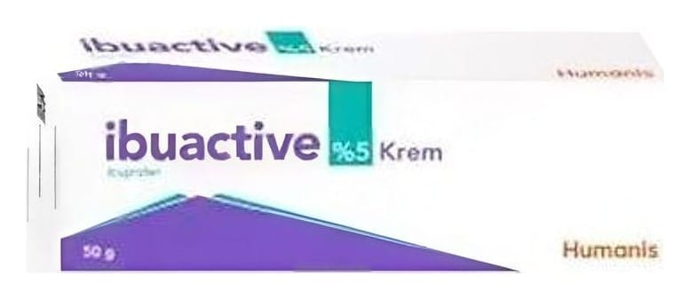

Ibuactive Krem %5 50 g Krem

Ne için kullanılır
KT · Bölüm 1| ; ; | | * İBUACTİVE 50 gram krem içeren alüminyum tüp içinde kullanıma | sunulmaktadır. . İBUACTİVE ağrı kesici ve iltihap giderici, harici kullanıma yönelik bir ilaçtır. * İBUACTİVE adale romatizması, ağrılı eklem hastalıkları (artroz), omurganın ve diğer eklemlerin iltihabi romatizmal hastalıklarında, eklem yakınındaki yumuşak | dokunun (eklem içi, sinir, sinir kılıfları, tendon ve eklem çevresi) iltihabi | hastalıklarında, omuz sertliği, bel ağrısı, lumbago, spor ve kaza | yaralanmalarındaki ezilme, burkulma, gerilmelerin dıştan veya destekleyici | tedavisinde kullanılır. |
: ;
. F
| |